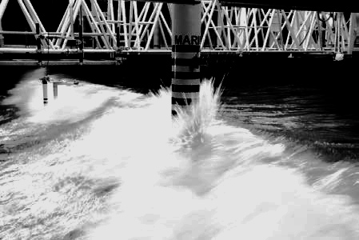

Eagre/Aegir
European Union European Industry Doctorates 2020-2023 (project 859983)

Partners


© 2024 Onno Bokhove
Template by Andreas Viklund. Panorama: Fugro GEOS. Photos: Breaking wave hitting a mono-pile offshore structure in the North Sea, www.flyingfocus.nl. Extreme wave hitting a wind turbine tower during model tests (MARIN)